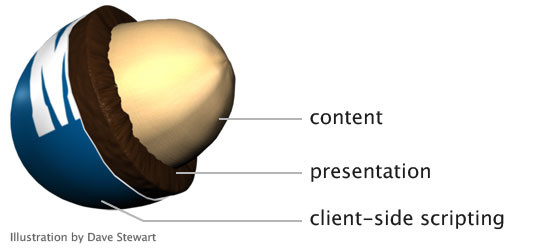

Bas, Joep, Jody
stukje van bas
Epcot Center
Epcot is a theme park at Walt Disney World Resort featuring exciting attractions, international pavilions, award-winning fireworks and seasonal special events.
Wat is Progressive Enhancement?
progressive enhancement is het principe om te beginnen met een solide basis. Hierin kan je later verbeteringen (technische functies) aanbrengen. Een manier om naar PE te kijken is door dit te vergelijken met liften en roltrappen. Wanneer een lift namelijk buiten werking is dan heb je er niks meer aan. Maar wanneer een roltrap buiten werking is dan is deze nog steeds bruikbaar als een normale trap.(Heilmann 2012)
voorbeelden:
- 
De core principes van PE
- Basisinhoud moet toegankelijk zijn voor alle webbrowsers.
- Basisfunctionaliteit moet toegankelijk zijn voor alle webbrowsers.
- Dunne, semantische markup bevat alle inhoud.
- Verbeterde lay-out wordt geleverd door extern gekoppelde CSS.
- Verbeterd gedrag wordt geleverd door onopvallend, extern gekoppeld JavaScript.
- De voorkeuren van de webbrowser van de eindgebruiker worden gerespecteerd.
Waarom gebruik je PE?
Er zijn meerdere belangrijke redenen om als eerste te focussen op PE. Een Sterke Basis aan het begin van een nieuw project waarbij je alleen de basis van de webtechnologieën gebruikt voordat je complexiteit toevoegt. Stabiliteit de PE strategie helpt bij het maken van een nieuw project voor een sterke basis. Hier liggen de HTML, CSS en JS op één lijn. Dit is bedoeld om fallbacks te bieden voor het project. Hierdoor ben je niet sterk afhankelijk van browserspecifieke functies. SEO en vindbaarheid want iedereen wilt graag dat zijn applicatie op de eerste pagina van google terrecht komt. Pagina's die zijn gebouwd met de PE strategie zorgen ervoor dat de basisinhoud altijd toegangelijk is voor zoekmachine spin en klaar is om geïndexeerd te worden.
Eigen metafoor
De stoel. Je kan een krukje hebben waar je op kan zitten, de core functionaliteit is dat je kan zitten op iets. deze stoel kan je mooier maken door middel van een rugleuning, armleuning en een mooi stofje erop. Dan kan je als laatste nog toevoegen dat de stoel kan rollen door middel van rolletjes en dan je hem kan verstellen op hoogte en rugleuning.